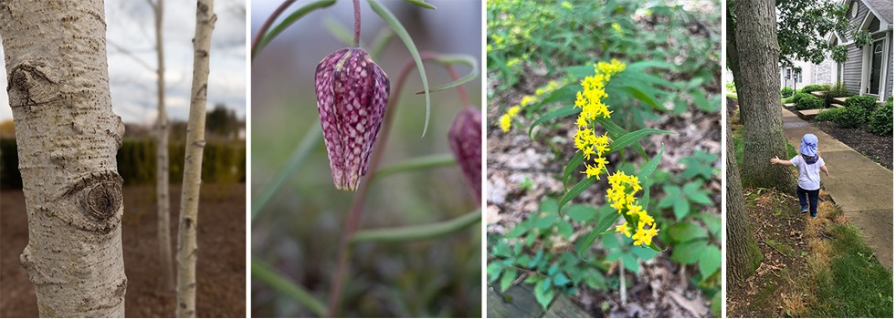
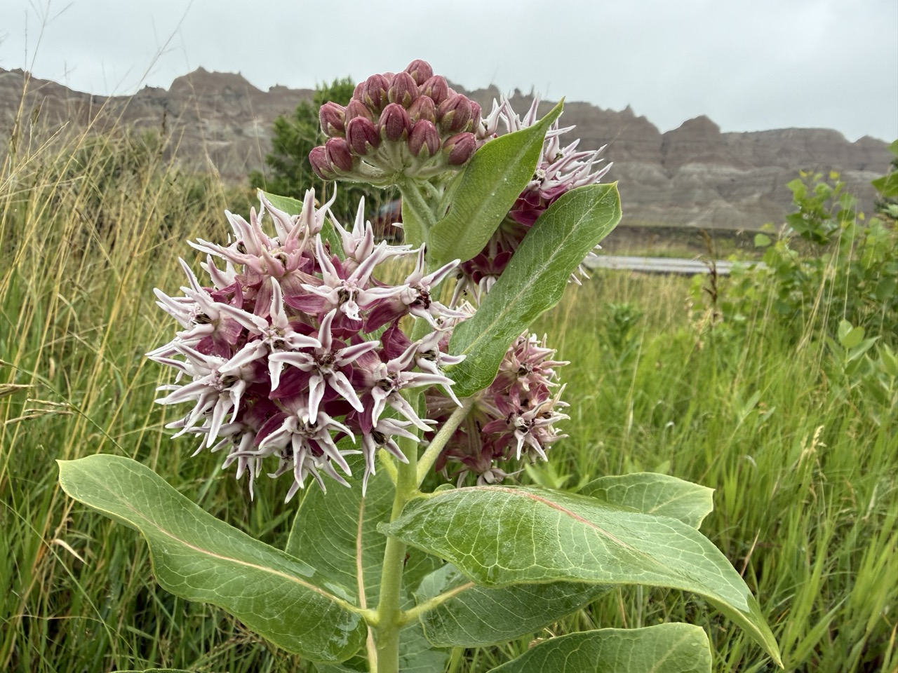
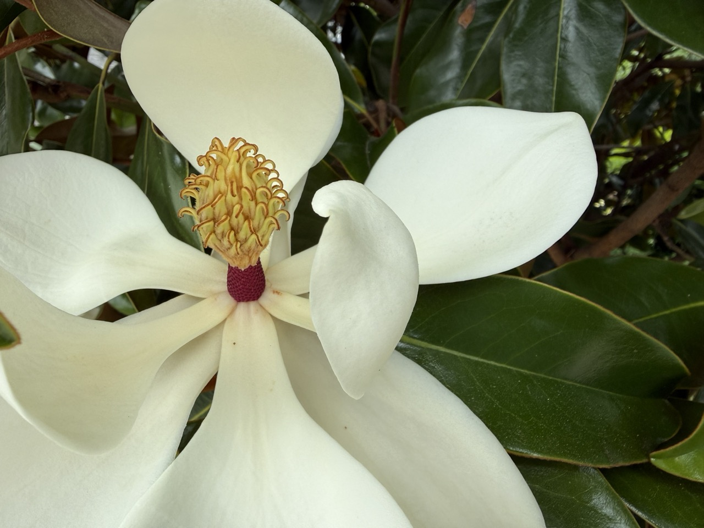
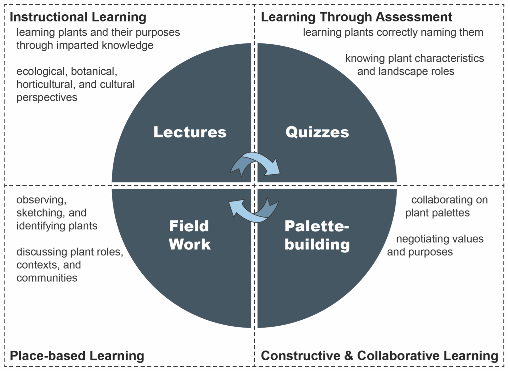

Larch 245: Ecology and Plants II (Fall 2026)

Syllabus
Course Information
Meeting Times
Monday and Wednesday, 2:30-3:45 PM
Location(s)
Classroom: 113 Chemical and Biomedical Engineering Building
Outdoors: UP campus and arboretum
Faculty
Travis Flohr, Ph.D., tlf159@psu.edu, 419 SFB, office hours by appointment.
Teaching Assistant
Julia Li, jsl5612@psu.edu
Credits
3-credits
Course Costs
We have tried to keep course costs to a minimum. Feel free to leverage your existing supplies (e.g., pens, pencils, erasers, and pencil sharpeners). Still, Table 1 is our best estimate of course costs based on past course experiences. You may use markers or pens other than those listed below; the key is being able to draw botanical illustrations and take field notes.
| Materials and Supplies | Total Costs |
|---|---|
| Field Journal | $25.00 |
| Fineliner Technical Pens or Sharpies | $15.00 |
| Graphite Pencil Set, with multiple 3+ hardnesses | $10.00 |
| Pencil Sharpener | $2.00 |
| Total Costs | $52.00 |
** Disclaimer. Prices are as accurate as those provided in the summer of Published in 2026.
Please feel free to express yourself artistically with supplies other than those listed above. For example, you can embellish your botanical illustrations with colored pencils, markers, and/or watercolors (embellishments are not required, but good drawing is).
Course Description and Objectives
Larch 245 Ecology and Plants II is the single course in our curriculum that focuses most on learning about plants and constructing plant palettes appropriate to various designed landscapes and their contexts. The course strongly emphasizes understanding plant ecology and planting culture, critical aspects of a landscape architect’s education. Plants, often under-appreciated in our discipline and allied professions, are complex living organisms that take root, grow, interact with other life forms and the surrounding environment, and die and regenerate. As life forms on this earth, they have intrinsic value—value for their own sake.

It’s important to note a significant societal trend towards ‘plant blindness’—the inability to appreciate plants in their environment for their aesthetic or biological characteristics (Brzuszek et al., 2011; Griswold, 1994; Wandersee & Schussler, 1999). This lack of attention to plants stems from an anthropocentric view that ranks plants as inferior to animals, which is a bias that needs to be overcome. Given our discipline’s focus on environmental sustainability, fostering relationships among humans, other life forms, and natural processes is crucial. This is one way to effectively promote several key UN Sustainable Development Goals, including Good Health and Well-being [3], Industry, Innovation and Infrastructure [9], Reduced Inequalities [10], Sustainable Cities and Communities [11], Responsible Production and Consumption [12], Climate Action [13], and Life on Land [15] (United Nations, 2024).
Moreover, planted landscapes perform well when well-designed, managed, and placed at the right time and in the right place. That is, they provide essential instrumental values such as ecosystem services. According to Michigan State University Extension (2024), Kremer et al. (2016), and Quijas et al. (2010), plants provide essential ecosystem services across all urban systems, including enhancing biodiversity, carbon sequestration, watershed management, moderating microclimates, and supporting pollinators. They can also increase residential and commercial land values (Minor et al., 2023; Siriwardena et al., 2016).
Perhaps most importantly, for aspiring and practicing landscape architects, plants are beautiful and intriguing in their own right. They articulate and animate space, thus helping create memorable places. Plants express our values. They often deeply express cultural values in their landscape setting, good and bad, inclusive or exclusive. A large body of research even shows that plants can enhance mental well-being, stimulate workplace productivity, and reverse nature deficit disorder (Kalantzis, 2016; ten Brink et al., 2016).

In summary, plants play a vital role in sustaining life on planet Earth. As landscape architects, we have the privilege (I’d argue it is a moral imperative) of helping set these benefits in motion. ASLA has also integrated this professional value and moral imperative into its mission (American Society of Landscape Architecture, 2022). Let’s shift from ‘plant blindness’ to ‘plant sightedness’ (and all the other senses!), including how plants can be activated in the landscape. Larch 245 will help you on this journey.
Larch 245 is part of the core professional sequence in our accredited program. It extends the basic ecology and introduction to plant communities gained in Larch 145 (Ecology and Plants I). This course is a key prelude to Larch 246 (Ridge & Valley field course) and Larch 335 Planting Methods. The more you learn in Larch 245, the more rewarding subsequent courses and your profession will be. This course aims to develop your knowledge of native and introduced (i.e., ‘non-native’) plants in their landscape and ecosystem contexts, which is vital to your growing abilities in landscape architecture.
Course Outcomes
Upon the completion of Larch 245, you should:
- be able to correctly identify and name 70-120 plants (in small batches) drawn from across a broad spectrum of woody and herbaceous landscape species and their cultivars and, where relevant, associate these plants with their natural plant communities.
- be able to associate select plants with their landscape performance1 attributes, their ecological and biological/bioclimatic contexts, and their aesthetic, social, cultural, and functional roles and capabilities.
- be able to conduct plant observation and identification techniques, mostly in the field, but, depending on the weather, also in the lab/studio;
- become more adept at developing woody and herbaceous plant palettes for select landscape genres, from designed ecosystems to urban landscapes to ornamental gardens, including being able to discern when it’s best to use either native or non-native species/cultivars; and
- appreciate plants more deeply, recognize them as essential tools in the landscape architect’s repertoire, and understand their role as key contributors to advancing the UN Sustainable Development Goals.
Course Structure
Learning theory strongly advises blending several approaches to build knowledge of plants, their purposes, appropriate landscape contexts, and ecologies. As shown in Figure 1, we will interweave four learning formats: Instructional, Place-based, Assessment-based, and Collaborative/Constructive. I hope the combination of academic, experiential, and interactive activities will quickly build your plant knowledge and appreciation, providing a foundation for lifelong fluency with plants and their application in landscape and ecosystematic settings.

Course Learning Formats and Evaluation
Lectures and Discussions
Lectures and discussions will inform plant walks, quizzes, and your collaborative projects. Lectures may also include other classroom-based activities. The frequency of lectures and discussions will depend on the weather during scheduled plant walks (i.e., we will conduct plant walks when the weather is good). We may have guest lectures. Penn State allows in-person courses to deliver up to 25% of its content online. I reserve the right to use online delivery when and if necessary; if changes to in-person become necessary, we will use Zoom, and I will send out a Canvas announcement before class.
Plant Walk Botanical Field Notes
You must purchase your own field notebook (unlined) before the first Plant Walk. These will contain both notes on field lectures and your observations and botanical sketches. More information is provided in the Plant Walk assignment statement.
Field-based instruction and observation form the core of LArch 245, i.e., Plant Walks. The best way to learn about plants is to study them where they live, face-to-face (actually, face-to-plant). Fortunately, fantastic resources are close at hand. Our primary ‘plant walk’ locations will be split between the Penn State main campus (e.g., Schreyer Garden, Alumnae Gardens, Stuckeman area, among others) and the Arboretum’s cultivated collections at the H.O. Smith Botanic Gardens (you can find the plant walk meeting locations in the linked assignment statement above. To assist in your success, I provided a few notes about Plant Walk Botanizing/Field notetaking below:
- When botanizing on campus (including the arboretum), we typically meet at the designated field spot at the beginning of class, so please arrive a few minutes early. At the Arboretum, we usually meet at the central Event Lawn, the meadow bridge, or the Overlook Pavilion shelter on rainy days.
- The arboretum’s H.O. Smith Botanic Gardens’ online Plant Finder (ArcGIS mapping) is available at: https://datacommons.maps.arcgis.com/apps/webappviewer/index.html?id=88d9267530dc48db8635703130bb084e. Cell phone referencing of the Plant Finder while on site is encouraged; WIFI extends through most (but sometimes not all) of the gardens. In some peripheral areas, you may need to use cell data. Alternatively, you can prepare on your computer in advance; map printouts can help locate plants. Locating some plants can be tricky, so feel free to work together with your classmates. The TA and I will help you locate the designated plants to study.
- How to read plant labels at the H.O. Smith Botanic Gardens: https://arboretum.psu.edu/gardens/living-plant-collections/#custom-collapse-0-5.
- When on-site, be thoughtful and courteous. Please do not trample through planted beds, and resist the temptation to pick leaves, twigs, or flowers unless I give permission. I may occasionally remove a leaf, fruit, or small twig to share with you, but only for educational purposes and infrequently. If each student removed plant parts, the impacts would be significant.
- We will be studying in some locations that accommodate beneficial pollinators. Anaphylactic shock resulting from insect stings is very rare, but if you have any concerns, please prepare accordingly, and feel free to talk with instructors about alternative learning accommodations. Be prepared for inclement weather. Plant walks will only be canceled (and replaced with indoor activities) during heavier rainfall or thunderstorms.
Quizzes
Quizzes will follow soon after each Plant Walk. Performing well on quizzes will require learning and retaining scientific and common plant names, characteristics, and purposes. Studying for quizzes will require discipline, good field notebooks, and repeated practice (I recommend flashcards). You will take quizzes via Canvas. More information can be found in the Quiz assignment statement.
Collaborative Project
The course will conclude with a collaborative, group-based presentation of the project. This project will occur later in the semester when the weather is less reliable, and we have finished most of our plant walks. The project will require you to add plants to a plant database and community-based plant palette and describe plant/mutualistic food web relationships. I will provide project details in a separate assignment statement. You can find more information in the Plant Palette assignment statement.
Grade Allocation
Semester grades will be allocated as outlined in Table 2. Details for each graded deliverable will be provided within individual deliverable statements.
| Description | Value |
|---|---|
| Field Trip Form Submission | 5 points |
| Plant Walk Botanical Field Notes | |
| Interim progress check 1 | 15 points |
| Interim progress check 2 | 15 points |
| Final submission | 15 points |
| Quizzes | |
| Quiz 1 | 5 points |
| Quiz 2 | 5 points |
| Quiz 3 | 5 points |
| Quiz 4 | 5 points |
| Quiz 5 | 5 points |
| Quiz 6 | 5 points |
| Quiz 7 | 5 points |
| Plant Palette Project | 20 points |
| Total | 105 points |
Extra credit option(s): There will be one extra credit option this year.
Option 1: Plant Database (5 points) – enter 25 plants into a shared spreadsheet database. You must submit all plant entries before November 29. We will not assign extra credit if you enter plants after November 29. We will check plant entries for accuracy and completeness. Involvement in database entry is voluntary and not required for this course. While this effort may seem tedious, we believe plant research, reading, and data entry are great ways to learn, retain, and recall plant knowledge that benefits your career.
Grading Rubric and Scale
Grades will be based on the quality, accuracy, completeness, and timeliness of your work; the strength of your progress; and your consistent, productive engagement, both individually and during group activities. If you are concerned about where you stand during the semester, please talk with me. Table 3 outlines the overall grading rubric to be used in this course; additional rubrics are provided in the problem statements. Note, this course will follow standard mathmatical rounding, e.g., a 92.5 will be rounded to a 93; however, a 92.1 will not be rounded.
| Qualitative Level Achieved. | Letter Grade | % Range |
|---|---|---|
| Excellent, inspired, brilliant quality, highly accurate, fully complete, faultless. | A | 93-100 |
| Between excellent and very good, quite inspired, complete, nearly faultless. | A- | 90-92.9 |
| Very good; shows some inspiration or is special in some way but is not brilliant and/or faultless. | B+ | 87-89.9 |
| Good, solid, and complete, but with no particular inspiration and/or special qualities. | B | 83-86.9 |
| Adequate; a few notable weaknesses and/or gaps. | B- | 80-82.9 |
| Basics are present but have a series of notable weaknesses and/or gaps. | C+ | 77-79.9 |
| Not all the basics present; substantial errors; consistently weak and/or uninspired. | C | 70-76.9 |
| Barely acceptable; major gaps, weaknesses, and/or elements missing. | D | 60-69.9 |
| Unacceptable; missed the point; substantially incomplete. | F | <60 |
Course Policies
AI/Generative Technology Policy
This course does not permit AI/Generative technologies (GT), such as ChatGPT, Midjourney, Adobe Firefly, Dall-E, or others. If you have questions, discuss them with us before you begin and before submitting the final work. The reason for this policy is that I have tried all these AI applications, and none currently provide robust, accurate plant information. I attempted a few of the projects with AI, and the best they earned was a D. Thus, the use of AI/GT is plagiarism in this course (see plagiarism policy). Additionally, emerging research shows that using AI inhibits deeply learning initial concepts and the development of early critical thinking skills. Skills necessary to ensure AI is producing reliable and truthful outputs. However, you may use a spelling or grammar check AI such as Grammarly.
You are not permitted to upload this course’s syllabus, quizzes, lectures, or assignment statements to any AI or Generative technology, unless course accommodations necessitate doing so. Doing so will be considered an academic infraction and theft of academic intellectual property.
Departmental, School, and University Policies
All departmental and school studio/building policies are in effect.
Communication Policy
Our official mode of communication in this class is through Canvas. Course-wide communication will be via Course Announcements. Personal communication between the teaching, and students will be via Canvas Inbox. All communication shall be respectful and professional. It is the student’s responsibility to check Canvas frequently. All technology troubleshooting questions should be directed to the appropriate Canvas Discussion Board. The teaching team will moderate discussion board posts and involve the faculty as needed.
Before each field class, I will monitor the weather closely using local weather reports. Field classes will be held during good weather and when light rain is forecasted. Dress accordingly! If the weather is predicted to be stormy and consistently wet during class time, I will post a Canvas announcement to the whole class to opt for “Plan B,” either to meet on Zoom or in our classroom space. The announcement may be sent the evening before or right up to about noon on the day of class. WATCH FOR MY CANVAS ANNOUNCEMENTS!.
Weather-based Class Delays and Cancellation Policy
For university-related early dismissals or cancellations, please refer to http://news.psu.edu/story/333863/2014/11/10/campus-life/when-winter-weather-strikes-resources-university-park-community. For course-specific changes in scheduling or meeting requirements, see the “Bad Weather” information provided above.
Submission Policy
All projects and exercises must be submitted by the deadlines indicated in the course schedule. Incomplete assignments should be submitted by the deadline and will be graded as is. Students seeking an exception due to extenuating circumstances should message the faculty via Canvas before the deadline. Late submissions are strongly discouraged. A deduction of one full letter grade (e.g., B+ to C+) will be applied for each of the first two 24-hour periods of unexcused lateness beyond the deadline. Submissions will not be accepted beyond 48 hours after the deadline and will receive 0 points (0%).
Engagement and Attendance Policy
As a core part of the professional curriculum, attendance is mandatory and will be recorded. If we have any Zoom lectures, they will be no different from face-to-face lectures in that we expect your timely attendance. Class time (face-to-face or virtual) is intended to achieve the progress necessary to complete this course successfully. Since we have just two weekly classes, we expect your engaged and productive presence for the entire class period.
If you cannot attend due to extenuating circumstances, you must provide the instructors with prior notification and the appropriate reasons. If you have any cold, flu, or COVID-19-like symptoms, please stay home and/or isolate as appropriate. It is the student’s responsibility to communicate via Canvas with faculty regarding absences and to make up missing work within the unexcused late period noted below.
Inconsistent attendance, repeated lateness to class, or lack of progress and engagement during class may reduce the work grade for that assignment. Also, a pattern of unexcused absence or tardiness may result in a reduction in your grade. Note that we consider a student’s inattentive presence during a lecture disengaged and, thus, effectively absent.
Finally, university-level class attendance policies apply. For more information, see: https://undergrad.psu.edu/aappm/42-00-class-attendance.html.
If you cannot attend due to illness or extenuating circumstances, Canvas message the teaching team promptly. If you are seriously ill, notify the teaching team as soon as possible or ask a friend to do so on your behalf. If you miss a Plant Walk, we expect you’ll catch up on your own by visiting the site and finding/studying the designated plants for that session so that you’re prepared to take the associated quiz at the same time as your peers. If you must miss class due to activities in another class (e.g., a field trip), you must inform the instructional team promptly, well before class. Specifically, beyond two (2) unexcused absences, the student may receive a 2% reduction in an assignment grade for each subsequent unexcused absence. More generally, inconsistent attendance, a record of lateness, or a pattern of lack of progress or engagement during class or fieldwork may result in a significant grade reduction.
Academic Integrity and Misconduct
We urge you to promise not to cheat on quizzes or plagiarize during the semester. Why? Because the only true road to professional and personal success is to be honest and embrace academic and personal integrity. When you learn honestly, you learn the material properly, and you feel good about yourself as a human being. Evidence of cheating on a quiz or plagiarism on an assignment will result in a zero (0%) grade for the assignment in question, an additional final course grade reduction, and possibly, depending on severity, course failure and academic sanction. If you have any doubts or questions about what constitutes cheating or academic misconduct, please do not hesitate to talk with the teaching team.
We will adhere to all academic integrity policies in this course. According to the University, academic integrity “is the pursuit of scholarly activity in an open, honest, and responsible manner (Penn State University, 2024).” Dishonesty and plagiarism are wrong and will result in academic sanctions. We will abide by university policy. For more information, see https://bulletins.psu.edu/undergraduate/general-information/academic-information/student-rights-responsibilities/academic-integrity/. If you plagiarize any portion of an assignment, you will receive 0 points (0%) for the assignment. When in doubt, seek advice from the course teaching team.
Inclusivity, Justice, Collaboration, and Accommodations
In the spirit of shared humanity and concern for our community and world, we recognize that our learning activities and design solutions can either support or disadvantage groups of people and individuals. We value critical reasoning, self-reflection, imagination, empathy, inclusivity, and collaboration. We disavow racism and all other systemic patterns of prejudice, including speech or actions that attempt to silence, threaten, degrade, disadvantage, or displace groups and individuals. We advocate for social and environmental justice and inclusive communities and places as we work toward an equitable, democratic, and sustainable society. As future landscape architects, you have the opportunity and responsibility to create and define civic spaces and landscapes that are welcoming to all people and address plant-related societal issues (e.g., ecosystem service equity and biodiversity collapse). We will support and enforce all nondiscrimination and harassment policies. For more information, see https://guru.psu.edu/policies/AD85.html.
Educational Equity
Consistent with University Policy AD29, students who believe they have experienced or observed a hate crime, an act of intolerance, discrimination, or harassment that occurs at Penn State are urged to report these incidents. Refer to http://equity.psu.edu/reportbias/.
Indigenous Lands Statement
As landscape stewards and advocates for both restorative justice and the environment, we acknowledge that the Stuckeman School rests on the ancestral lands of the Erie, Haudenosaunee, Lenape, Shawnee, Susquehannock, and Wahzhazhe Nations. As a land grant institution, we acknowledge and honor the traditional caretakers of these lands and strive to understand and model their responsible stewardship. We also acknowledge the longer history of these lands and our place in that history. Penn State’s land grant was funded by selling land taken from 112 tribal nations in 50 land cessions across 16 states. This injustice has yet to be openly acknowledged by Penn State, much less reconciled.
Penn State Values and Student Code of Conduct
We expect all students to conduct themselves in accordance with the University’s Code of Conduct. For details, see https://studentaffairs.psu.edu/support-safety-conduct/student-conduct/code-conduct. Please follow the core Penn State values of Integrity, Respect, Responsibility, Discovery, Excellence, and Community.
Support
Counseling & Psychological Services Resources
Counseling and psychological service resources are available to all students. If you need support, be sure to use these resources. For more information, see http://studentaffairs.psu.edu/counseling/.
Accommodations
Students with disabilities are welcomed into Penn State and SALA educational programs. If you need modifications or reasonable accommodations in this course due to a disability, contact the Office for Disability Services (ODS) and inform the course faculty. ODS is located at 116 Boucke Building. For more information, see https://equity.psu.edu/offices/student-disability-resources. Please provide accommodation requests and documentation to the course faculty at the beginning of the course so we can best support you.
Changes and Updates
The syllabus, schedule, project statements, lectures, and supporting materials are subject to change and are copyrighted. Faculty will promptly communicate revisions verbally and via Canvas announcements.
References
American Society of Landscape Architecture. (2022). Landscape Architects Urge Greater Action on Biodiversity Crisis. News. https://www.asla.org/NewsReleaseDetails.aspx?id=62097
Brzuszek, R. F., Harkess, R. L., & Stortz, E. (2011). Perceptions of the Importance of Plant Material Knowledge by Practicing Landscape Architects in the Southeastern United States. HortTechnology, 21(1), 126–130. https://doi.org/10.21273/HORTTECH.21.1.126
Griswold, M. (1994). The Horticultural Reconnection. Landscape Architecture Magazine, 84(5), 46–48, 50, 52.
Kalantzis, A. (2016). The impact of indoor plants on well-being in the workplace.
Kremer, P., Hamstead, Z., Haase, D., McPhearson, T., Frantzeskaki, N., Andersson, E., Kabisch, N., Larondelle, N., Rall, E. L., Voigt, A., Baró, F., Bertram, C., Gómez-Baggethun, E., Hansen, R., Kaczorowska, A., Kain, J.-H., Kronenberg, J., Langemeyer, J., Pauleit, S., … Elmqvist, T. (2016). Key insights for the future of urban ecosystem services research. Ecology and Society, 21(2). http://www.jstor.org/stable/26270402
Landscape Architecture Foundation. (2024). About Landscape Performance | Landscape Performance Series. https://www.landscapeperformance.org/about-landscape-performance
May, T. W., Redhead, S. A., Bensch, K., Hawksworth, D. L., Lendemer, J., Lombard, L., & Turland, N. J. (2018). Chapter F of the International Code of Nomenclature for algae, fungi, and plants. XIX International Botanical Conference. https://IMAFungus.biomedcentral.com/articles/10.1186/s43008-019-0019-1
Michigan State University Extension. (2024). Ecosystem Services. Native Plants and Ecosystem Services. https://www.canr.msu.edu/nativeplants/ecosystem_services
Minor, E., Lopez, B., Smith, A., & Johnson, P. (2023). Plant communities in Chicago residential neighborhoods show distinct spatial patterns. Landscape and Urban Planning, 232, 104663. https://doi.org/10.1016/j.landurbplan.2022.104663
Narango, D. L., Tallamy, D. W., & Marra, P. P. (2018). Nonnative plants reduce population growth of an insectivorous bird. Proceedings of the National Academy of Sciences, 115(45), 11549–11554. https://doi.org/10.1073/pnas.1809259115
Penn State University. (2024). Academic Integrity | Penn State. Undergraduate Bulletin. https://bulletins.psu.edu/undergraduate/general-information/academic-information/student-rights-responsibilities/academic-integrity/
Quijas, S., Schmid, B., & Balvanera, P. (2010). Plant diversity enhances provision of ecosystem services: A new synthesis. Basic and Applied Ecology, 11(7), 582–593. https://doi.org/10.1016/j.baae.2010.06.009
Siriwardena, S. D., Boyle, K. J., Holmes, T. P., & Wiseman, P. E. (2016). The implicit value of tree cover in the U.S.: A meta-analysis of hedonic property value studies. Ecological Economics, 128, 68–76. https://doi.org/10.1016/j.ecolecon.2016.04.016
Sturtevant, R. S. (1927). Planting design—Its study and teaching. Landscape Architecture Magazine, 18(1), 52–59.
ten Brink, P., Mutafoglu, K., Schweitzer, J.-P., Kettunen, M., Twigger-Ross, C., Baker, J., Kuipers, Y., Emonts, M., Tyrväinen, L., & Hujala, T. (2016). The health and social benefits of nature and biodiversity protection. A Report for the European Commission (ENV. B. 3/ETU/2014/0039). London/Brussels: Institute for European Environmental Policy.
United Nations. (2024). THE 17 GOALS | Sustainable Development. https://sdgs.un.org/goals
Wandersee, J. H., & Schussler, E. E. (1999). Preventing Plant Blindness. The American Biology Teacher, 61(2), 82–86. https://doi.org/10.2307/4450624
Weller, R. (2014). Stewardship now? Reflections on landscape architecture’s Raison d’etre in the 21st century. Landscape Journal, 33(2), 85–108.
Landscape performance is “a measure of the effectiveness with which landscape solutions fulfill their intended purpose and contribute to sustainability. It involves assessment of progress toward environmental, social, and economic goals based on measurable outcomes (Landscape Architecture Foundation, 2024).”↩︎